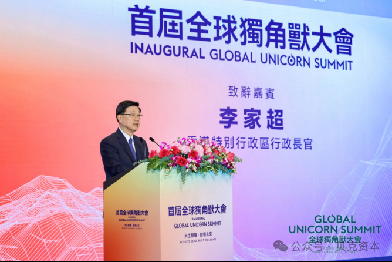
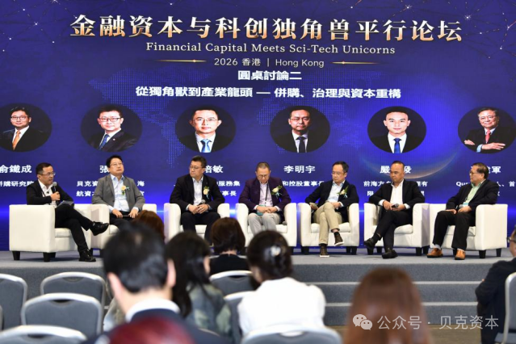
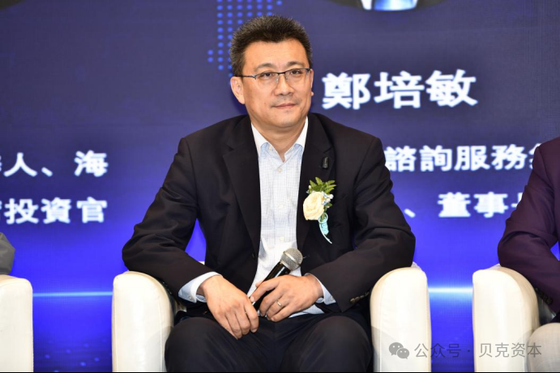

2026年8月24日，香港会展中心。我以新加坡世贸秘书长兼首席运营官的身份，出席了由香港大公文汇传媒集团主办的首届全球独角兽大会——金融资本与科创独角兽论坛。这场论坛汇集了全球投资机构、企业家、院士专家学者及产业头部企业代表，围绕资本助力科创企业发展、AI产业变革、独角兽商业化及全球化布局等前沿议题展开研讨。我们的董事长张克先生——同时是贝克资本集团董事长——作为论坛嘉宾出席，并在"从独角兽到产业龙头——并购、治理与资本重构"圆桌对话中，结合操盘过千亿资产并购到退出的案例和经验，分享了跨国并购中的"五个关键点"。我坐在台下，一边听一边记，想把他在跨国并购这件事上真正有分量的那几个判断原原本本地留下来。

全球独角兽大会开幕式上，香港特别行政区行政长官李家超在致辞时称，全球正在经历一场科技与产业革命，生命健康科技突破极限，人工智能与机器人重塑生产，新能源创新改写规则。在"一国两制"下，香港担当国家和全球之间"超级联系人"和"超级增值人"的角色，不仅成为内地初创和独角兽企业进军国际市场的跳板，也是海外顶尖科创企业探索内地市场的首选枢纽。
在【金融资本与科创独角兽论坛】中，全球价值投资协会主席贾红波先生表示，科创独角兽是新经济时代极具生机的市场力量，承载前沿技术突破、商业模式创新等使命，而金融资本正是独角兽破浪前行、不断发展壮大的关键助推力量。

第一：并购到底要实现什么突破？
每一场并购的目的到底是为了市场突破、技术突破还是组织人才突破？这必须要先想清楚。
第二：怎么实现并购双方的利益一致性？
交易之后并购双方如何形成有效的利益捆绑是并购效果好不好的关键。比如，张克曾用香港上市公司与新加坡上市公司通过换股交易方式实现你中有我、我中有你的有效利益捆绑。
第三：协同效应怎么测算？
协同效应无非是降本和增收。相比之下，对降低成本幅度的测算常常比对收入增加幅度的测算更真实有效一些，而后者常被并购方自己预估得过于乐观。

第四：并购之后如何退出？
结合曾在海航作为首席投资官操盘并购1300多亿并在短期内成功完成安全退出的经手案例，张克分享了心得。
第五：并购资金计划？
并购用的资金必须匹配并购的计划周期，并购的真正效应常常不是短期即现的，往往需要三五年才能真正见效，因此短债长投的并购杠杆资金是值得关注的大忌。
"并购用的资金必须匹配并购的计划周期……短债长投的并购杠杆资金是值得关注的大忌。"
—— 张克，新加坡世贸董事长、贝克资本集团董事长从倾销诉讼到AI驱动：中国出海的代际跃迁
在被问到独角兽企业全球化布局时，张克董事长表示，八九十年代中国企业外贸出口常被告以倾销诉讼，因为当时的大部分中低端的出口商品的成本结构非常容易被测算得清楚；如今，越来越多的中国出口已走向以科技含量和优势驱动的中高端制造和AI+创新商业模式，也因此有效规避了以往常遇的"倾销诉讼"。同时他号召金融资本应采取"联审联投"的模式投资优秀有前景的中国科技企业走向世界，而跨国并购始终是一个加速海外布局的重要手段。
共识：全球化是必然，但怎么走是真正的考题
论坛也有众多来自政府、投资机构和上市公司嘉宾围绕着独角兽企业全球化第二曲线及业务出海战略进行讨论。香港投资推广署金融服务与科创、可持续发展环球总裁梁瀚璟、梅花创投创始合伙人吴世春、广慧并购研究院院长俞铁程、中国企业走出去联盟主席程瀚文、广州新莱福新材料董事长汪小明、谦和控股董事长李明宇、前海方舟资产管理有限公司董事总经理严其发等众多投资界专家达成共识：科技企业全球化是必然的长期战略，如何用好跨国并购手段整合全球资源，如何用好香港作为出海跳板，如何真正做到全球化规则下的本地化经营都是需要面对的挑战。
我的观察：并购不是一笔交易，是一套系统能力
作为秘书长兼首席运营官，我在台下听完这五个关键点，最深的感受是：并购从来不是一笔交易，而是一套系统性的能力建设。张克董事长从海航千亿并购到安全退出的实战经验里提炼出的这五条，每一条都指向同一个核心——想清楚"为什么做"比"怎么做"更重要。而对我们 WTC Singapore 来说，依托 WTCA 近100个国家、320个城市的全球网络，我们正在做的，恰恰是为中国科技企业的全球化布局提供那个"怎么落地"的可信节点。香港作为超级联系人，新加坡作为东南亚枢纽，这两者之间的协同，正是我们接下来要持续深化的方向。
"并购从来不是一笔交易，而是一套系统性的能力建设——想清楚'为什么做'比'怎么做'更重要。"
—— 董立鑫，新加坡世贸 秘书长兼首席运营官作为新当选的新加坡世界贸易中心董事长，贝克资本集团董事长张克先生号召未来科技企业应该从长从早规划，依托于全球世界贸易中心（WTCA）分布在近100个国家、320个城市的世贸中心全球网络，通过有效链接全球资本、持续创新和全球市场，实现金融资本持久赋能、加速中国独角兽企业走向世界的全球化进程！
关于世界贸易中心协会
世界贸易中心协会（World Trade Centers Association，简称WTCA）成立于1970年，是一个非营利、非政治性机构，致力于全球各地世界贸易中心的建立和有效运营，以此促进地区经济发展、助推国际贸易和投资。协会总部位于美国纽约，全球网络包括近100个国家和地区的300多个世界贸易中心，向成千上万的企业成员和客户提供服务，帮助他们开拓货源、增加客源并提升投融资机会。
关于新加坡世界贸易中心（WTC Singapore）
新加坡世界贸易中心是世界贸易中心协会（WTCA）在新加坡的官方授权成员，依托WTC ONE Club、GlobalX、WTC Fund三大业务板块，致力于连接全球资本、创新资源与市场机会，为企业提供跨境资源对接与全球化落地支持。